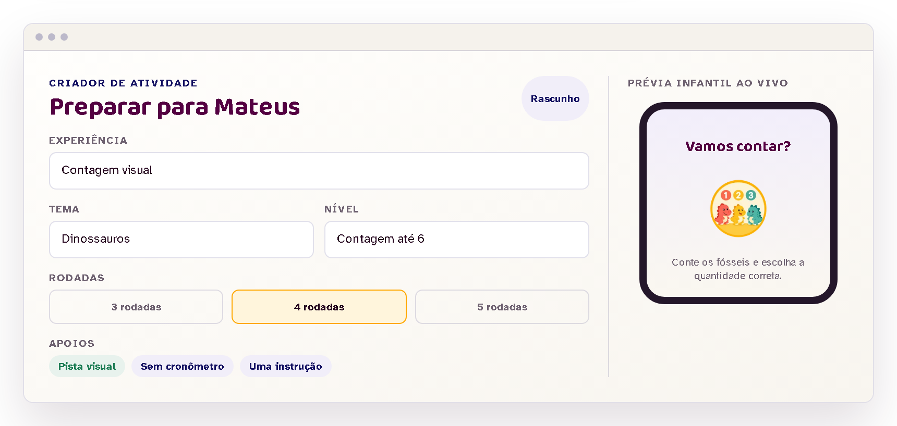
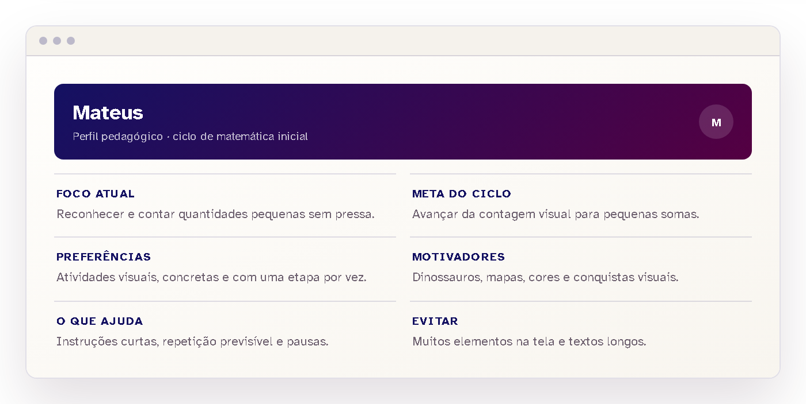
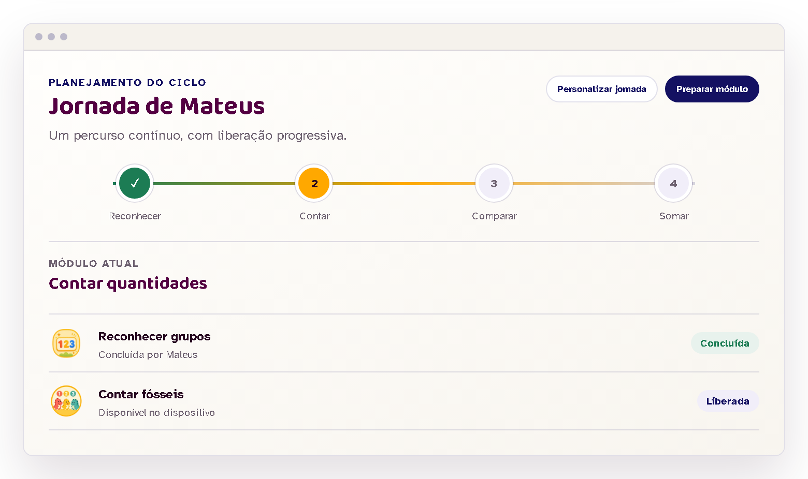
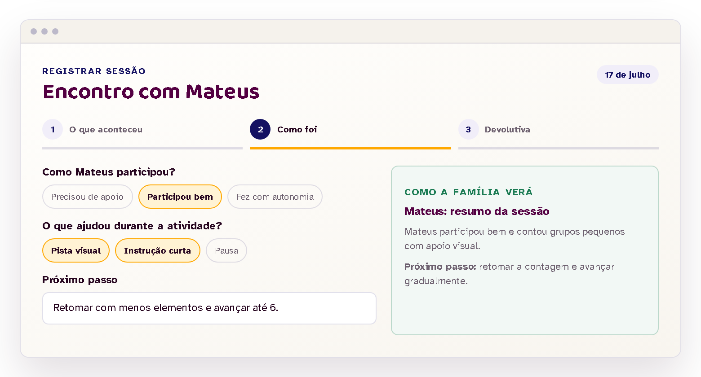

Para tutores
Planejar com contexto. Acompanhar com intenção.
O tutor prepara cada experiência, observa o encontro, registra o que importa e decide o próximo passo com apoio da equipe Cognita.

Perfil de acompanhamento
O planejamento começa pela criança, não pelo molde.
Antes de preparar uma atividade, o tutor consulta o foco atual, as preferências, os motivadores, os apoios úteis e o que deve ser evitado naquela experiência.
- meta clara para o ciclo;
- contexto pedagógico reunido em um só lugar;
- decisões ligadas ao momento da criança.

Criador de atividade
Prepare a experiência e veja o que a criança verá.
Experiência, tema, nível, número de rodadas e apoios ficam lado a lado com uma prévia infantil. Assim, cada escolha pode ser revisada antes da liberação.

Continuidade
Atividades deixam de ser tarefas soltas e viram uma jornada.
O tutor parte de uma sequência recomendada, pode personalizar o percurso e organiza módulos com missões liberadas aos poucos.
- jornada recomendada ou personalizada;
- módulos conectados por objetivo;
- liberação progressiva no dispositivo infantil.
Registro da sessão
Depois da atividade, registre apenas o que importa.
Um fluxo curto organiza o que aconteceu, como foi a participação e qual devolutiva chegará à família. O registro ajuda a preparar o encontro seguinte.
- participação e apoios observados;
- síntese em linguagem clara;
- próximo passo já conectado ao ciclo.

Atuação responsável
O trabalho acontece dentro de um ciclo mediado.
O cadastro é o início do processo. A equipe Cognita participa da validação do tutor, organiza os vínculos e mantém cada acesso relacionado ao papel exercido no acompanhamento.
O perfil é analisado antes da vinculação com uma criança.
A atuação tem contexto, objetivos e período de acompanhamento.
O tutor consulta somente os recursos e vínculos necessários ao trabalho.
A equipe acompanha decisões importantes e a organização dos vínculos.